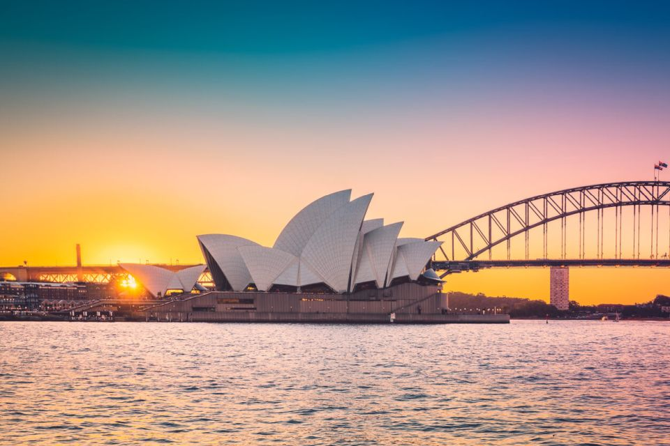
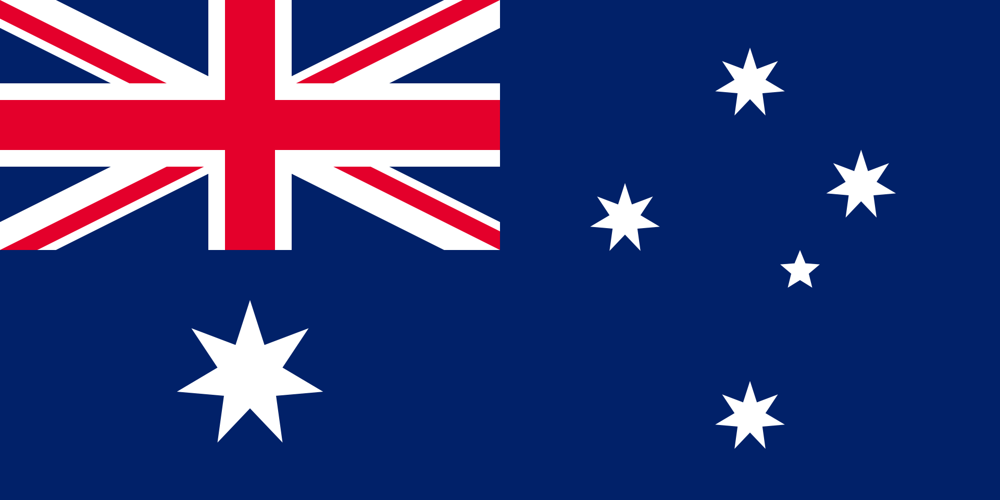
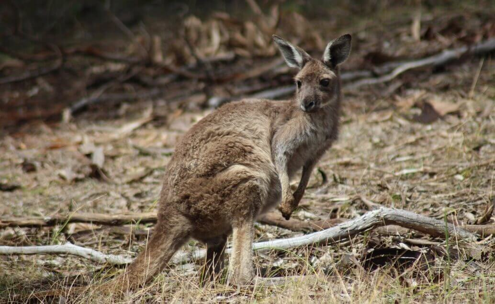

Austrálie
Austrálie leží v Oceánii a je šestou největší zemí na světě. Její rozloha je přibližně 7,69 milionu km².Podle odhadu měla k březnu 2025 populaci přibližně 27,54 milionu lidí.Hlavním městem je Canberra, ale největšími a nejznámějšími městy jsou Sydney a Melbourne. Austrálie je federace, skládá se ze šesti států a několika teritorií. Země je známá svou přírodní rozmanitostí – od deštných pralesů přes pouště (“Outback”) až po pobřežní oblasti. Kultura Austrálie zahrnuje jak evropské vlivy, tak bohaté tradice původních obyvatel (Aboridžinců).


Austrálie je lákavoudestinací
pro milovníky přírody i městského života. Nejznámějším symbolem je bezesporu Sydney Opera House a přilehlý přístav, který nabízí nádherné výhledy a pláže jako Bondi. V Melbourne si můžete užít živou uměleckou scénu, kavárny a sportovní události. Pro milovníky přírody je skvělou volbou Velký bariérový útes, kde lze potápět a objevovat podmořský život. Vnitrozemí Austrálie tvoří rozsáhlý Outback, kde najdete červené skalnaté pláně, dramatické kaňony a národní parky, jako je Uluru-Kata Tjuta. Také stojí za návštěvu Tasmanie, ostrov s divokou přírodou a klidnou atmosférou. A pokud chcete kombinaci přírody a kultury, Velké modré hory (Blue Mountains) poblíž Sydney poskytují krásné turistické trasy a panoramatické výhledy.
